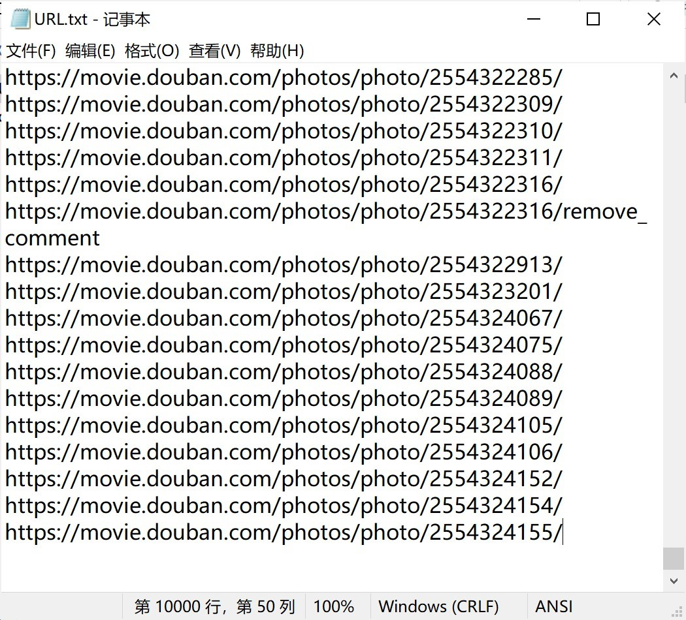
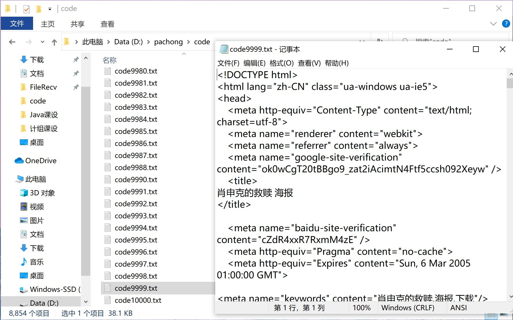
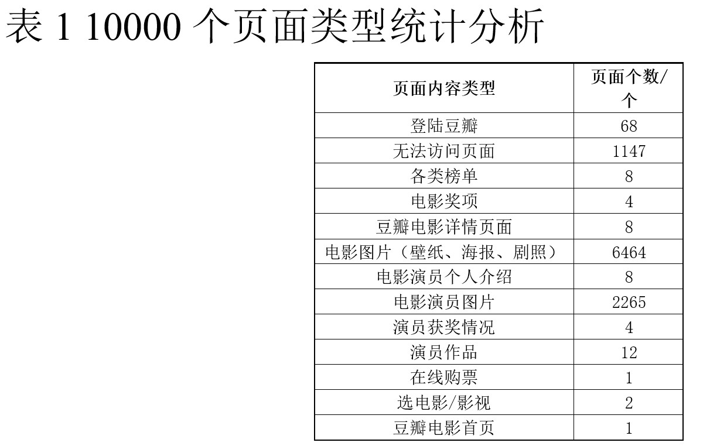
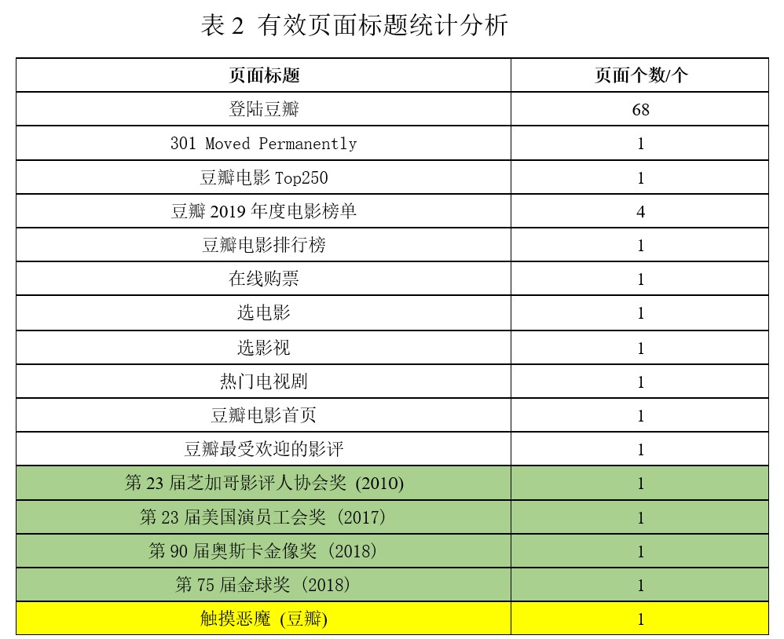
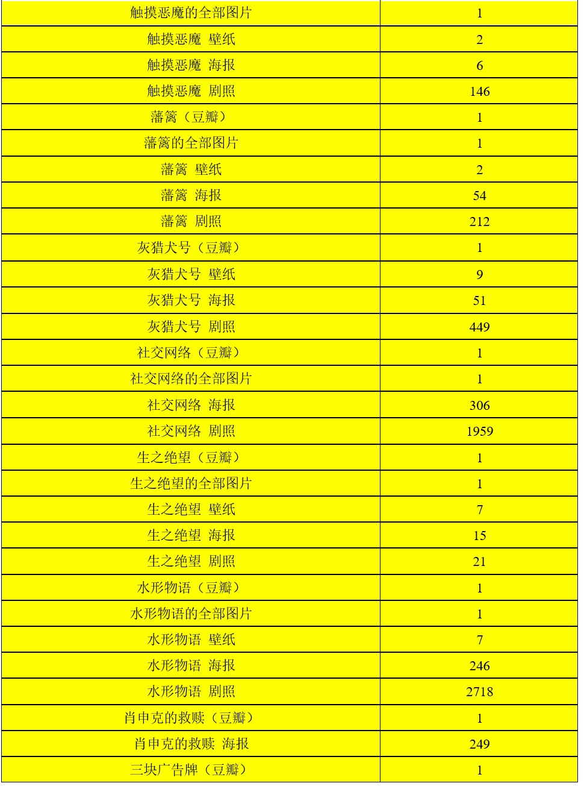
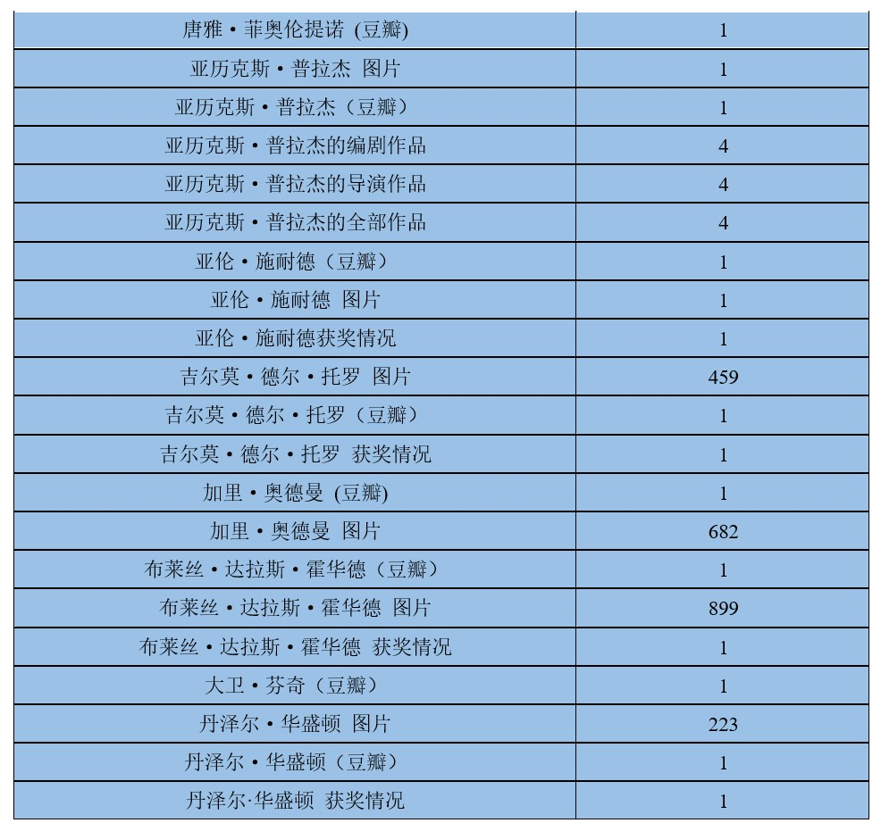
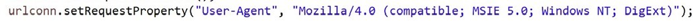

课程设计内容
选题 网站信息抓取：选取一个特定的网站（以豆瓣电影为例），使用Java爬取10000个页面的数据后，对数据进行统计分析。
背景知识
1、爬虫工作原理及关键技术概述
网络爬虫是一个自动提取网页的程序，它为搜索引擎从万维网上下载网页，是搜索引擎的重要组成。传统爬虫从一个或若干初始网页的URL开始，获得初始网页上的URL，在抓取网页的过程中，不断从当前页面上抽取新的URL放入队列，直到满足系统的一定停止条件。聚焦爬虫的工作流程较为复杂，需要根据一定的网页分析算法过滤与主题无关的链接，保留有用的链接并将其放入等待抓取的URL队列。然后，它将根据一定的搜索策略从队列中选择下一步要抓取的网页URL，并重复上述过程，直到达到系统的某一条件时停止。另外，所有被爬虫抓取的网页将会被系统存贮，进行一定的分析、过滤，并建立索引，以便之后的查询和检索；对于聚焦爬虫来说，这一过程所得到的分析结果还可能对以后的抓取过程给出反馈和指导。
2、正则表达式含义及构造方法概述
正则表达式(regular expression)描述了一种字符串匹配的模式（pattern），可以用来检查一个串是否含有某种子串、将匹配的子串替换或者从某个串中取出符合某个条件的子串等。
正则表达式是由普通字符（例如字符 a 到 z）以及特殊字符（称为”元字符”）组成的文字模式。模式描述在搜索文本时要匹配的一个或多个字符串。正则表达式作为一个模板，将某个字符模式与所搜索的字符串进行匹配。
构造正则表达式的方法和创建数学表达式的方法一样。也就是用多种元字符与运算符可以将小的表达式结合在一起来创建更大的表达式。正则表达式的组件可以是单个的字符、字符集合、字符范围、字符间的选择或者所有这些组件的任意组合。
设计步骤和内容
实验环境
操作系统：Windows操作系统
开发环境：Win10系统下的eclipse
实验步骤
1、创建包：pachong
2、新建class：Crawler
3、在Crawler类中添加属性：
爬虫的入口（theURL）、抓取的超链接的存放路径（theFILE）、抓取的页面数据的存放路径（thePATH）、判断是否是特定网站相关的页面的正则表达式（theREGEX）、页面计数器（count）
4、在Crawler类中添加方法：
URLcrawler(String URL,PrintWriter pw)：实现用递归法对传入的URL的页面数据进行抓取并写入创建的txt文件，写入的同时判断数据是否含有超链接，如果是则进行链接查重（调用check方法）和抓取。theURL为递归入口。当抓取的页面个数为10000时，结束递归。
Check(String url)：实现对传入的url进行查重，与已抓取的超链接记录进行比较。
5、在main函数中创建目标存放文件，并调用URLcrawler方法开始递归抓取页面数据。
6、基于Excel对已抓取的10000个页面数据进行统计分析和整理，从抓取的页面类型、个数、内容进行分析。
部分代码
public static void URLcrawler(String URL, PrintWriter pw){
URL url1=null;
URLConnection urlconn=null;
BufferedReader br=null;
PrintWriter connwriter=null;
Pattern pattern=Pattern.compile(theREGEX);
try{
String str=null;
url1=new URL(URL);
urlconn=url1.openConnection();
urlconn.setRequestProperty("User-Agent", "Mozilla/4.0 (compatible; MSIE 5.0; Windows NT; DigExt)");
Pattern pa = Pattern.compile("<title>.*?</title>");//源码中标题正则表达式
Matcher ma = pa.matcher(URL);
while (ma.find())
{
str=ma.group();
}
//生成源代码文件
count++;
br=new BufferedReader(new InputStreamReader(urlconn.getInputStream(),"utf-8"));
String line=null;
connwriter = new PrintWriter(new FileWriter(thePATH +str+".txt"),true);
//爬取网页文件
while((line=br.readLine())!=null){
//把爬取的源码写入文件
connwriter.println(line);
Matcher matcher=pattern.matcher(line);
//判断是否是一个网址
while(matcher.find()){
if(check(matcher.group())){
if(count==10000)
break;
//把爬取的网址写入文件
System.out.println(matcher.group());
pw.println(matcher.group());
URLcrawler(matcher.group(), pw);
}
}
}
System.out.println("爬取网页" + URL + "成功");
System.out.println("网页" + URL + "内链接爬取完成");
}catch(Exception e){
e.printStackTrace();
}finally {
try {
if(br != null) {
br.close();
}
if(connwriter != null) {
connwriter.close();
}
} catch (IOException e) {
e.printStackTrace();
}
}
}实验结果分析


抓取10000个页面数据耗时：114分钟
10000个页面中有效页面：8854个




以抓取的“水形物语（豆瓣）”页面数据为例进行分析：
name:水形物语
director：吉尔莫·德尔·托罗 Guillermo del Toro
author：吉尔莫·德尔·托罗 Guillermo del Toro、瓦内莎·泰勒 Vanessa Taylor
actor：莎莉·霍金斯 Sally Hawkins、道格·琼斯 Doug Jones、迈克尔·珊农 Michael Shannon、理查德·詹金斯 Richard Jenkins等
date Published: 2017-08-31
description: 故事发生在1963年，时值冷战期间，哑女艾丽莎（莎莉·霍金斯 Sally Hawkins 饰）在政府实验室里工作，是那里的一名清洁女工。年幼时，一场大病夺走了艾丽莎的声音，之后一直至今，她都在沉默之中…
ratingCount:365201
best Rating: 10
worst Rating: 2
rating Value: 7.2
水形物语的短评：全部108775条
以抓取的任意一个“丹泽尔·华盛顿 图片”页面数据为例进行详细分析：
第61张/共79张
1人喜欢
原图尺寸：1289×720
文件大小：64.7KB
来自：https://www.douban.com/people/52334317/ 跑掉的虾滑 上传于2012-03-01
实验总结
1、实验中遇到的问题
①异常 java.io.IOException: Server returned HTTP response code: 403 for URL:
访问豆瓣电影相关页面时需要访问权限，否则服务器禁止抓取。通过设置User-Agent伪装成用户对页面进行访问。
详细代码：

②抓取页面源代码中的title作为txt文件的名称时遇到问题：抓取页面是以行为单位，有些页面的源代码的
2、可改进方面
①对抓取的页面进行分类存储，通过识别页面属性（photo/movie/…）分类存放。
②使用多线程进行页面抓取，提高抓取效率。
3、心得体会
Java爬虫有许多方便的框架，但本设计没有用到框架，只是用单线程和递归法抓取10000个页面，设计过程中在设置正则表达式时耗费较长时间，通过一次次修改正则表达式最终达到筛选url的目的。分析过程耗时较长，因为抓取的10000个页面的内容没有进行筛选和分类，所以要先对10000个页面的内容一一查看并根据源代码中的title进行记录和分类。
通过本课程设计，我了解了Java网络爬虫的相关知识和正则表达式的书写格式和方法，并且可以设计实现一个相对简单的单线程运用递归法抓取页面的程序。
参考资料
[1]通过设置代理，解决服务器禁止抓取，报“java.io.IOException: Server returned HTTP response code: 403 for URL”错误的方法:https://www.cnblogs.com/xujanus/p/3423029.html;
[2]java爬取网站中所有网页的源代码和链接:https://www.cnblogs.com/autonomy/p/11890349.html;
[3]正则表达式 – 语法:https://www.runoob.com/regexp/regexp-syntax.html;
详细代码见 https://github.com/lynneliu-creator/JavaCode/blob/master/Crawler.java
欢迎交流~